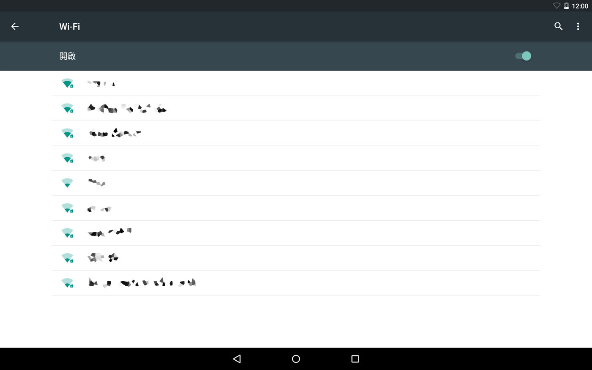

設定「Wi-Fi」
將 [Wi-Fi] 的 開啟／關閉鍵向右滑動設為 [開啟] 後，將顯示目前可使用的 Wi-Fi 網路清單。
長按網路名稱後，可變更各種設定值。
連接 Wi-Fi
1點選希望使用的 Wi-Fi 網路名稱。
若顯示上鎖圖示，則必須輸入密碼。
2輸入密碼後點選 [連線]。
詳細選單
點選畫面右上方的  後，將顯示詳細選單。
後，將顯示詳細選單。
| 新增網路 | 當收不到 Wi-Fi 路由器信號，或未廣播 SSID時，可利用手動方式新增 Wi-Fi 網路。 |
|---|---|
| 已儲存的網路 | 選擇或移除您已儲存的網路。 |
| 重新整理 | 重新掃描WiFi 網路。 |
| 進階 |